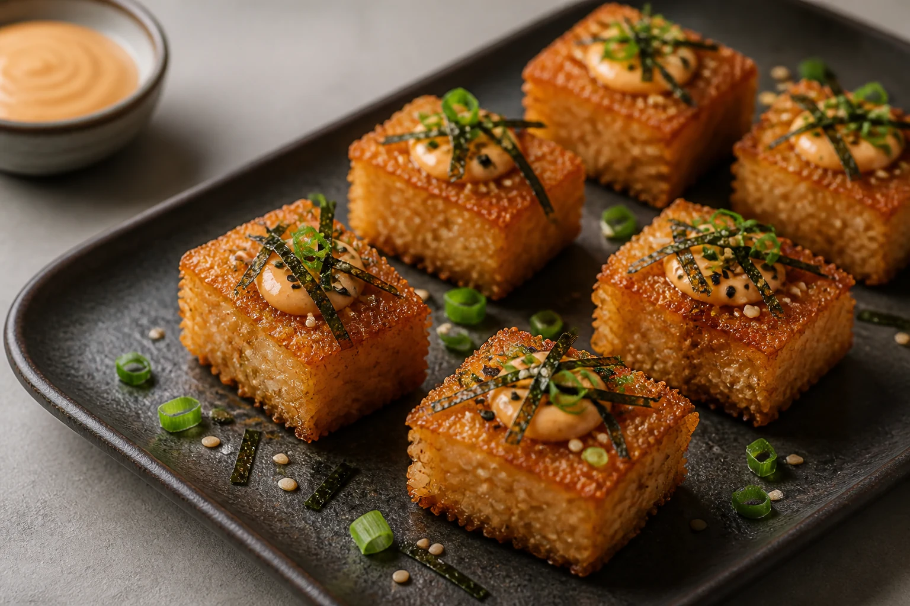

Recipe · Vegetarian
Crispy Sushi Rice Bites
Seasoned sushi rice with a deeply golden crust, topped with spicy mayonnaise, nori and sesame.
Prep 25 minCook 25 minMakes 12Medium
Start cooking
Method
- Season the rice.While the rice is warm, fold through sushi vinegar and salt. Avoid crushing the grains.
- Press and chill.Line a small tray or container with baking paper. Press the rice into an even 2 cm layer. Cover and chill for 20 minutes until firm enough to cut.
- Make the topping.Mix mayonnaise, gochujang and rice vinegar. Transfer to a small piping bag or keep chilled in a bowl.
- Cut and dust.Turn out the rice and cut into 12 neat rectangles. Dust the broad sides very lightly with cornflour.
- Cook until crisp.Heat oil in a non-stick pan over medium heat. Cook in batches for 3–4 minutes per side until deeply golden and crisp. Drain briefly on kitchen paper.
- Top and serve.Add a small spoonful of spicy mayonnaise to each warm bite. Finish with nori, sesame and spring onion. Serve immediately.
Cook's note: Use warm, freshly cooked sushi rice for pressing; cold loose rice will not bind as neatly.
NORIKO used here